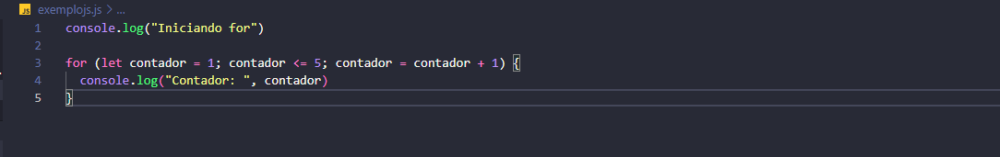

Introdução da Estrutura de repetição
Uma estrutura de repetição é uma lógica que repete as ações de um mesmo bloco de código por um número de
vezes determinado a partir do tipo de estrutura de repetição. São geralmente conhecidos como
loops(laços).
Elas fornecem os mecanismos que permitem que um programa tome decisões, repita ações e
controle o fluxo de execução. Sem elas, um programa seria apenas uma sequência linear de instruções, incapaz
de realizar tarefas complexas ou interagir com o usuário de forma dinâmica.
Exemplo:
Diferença entre os laços de repetições
As estrutuas de repetições (ou looping) são formados por 3 principais elementos, sendo eles: For While e Do While. No qual, a explicações sobre cada um estão no site.A escolha da estrutura de repetição adequada depende da lógica do seu programa e da sua necessidade específica. Ao entender as diferenças entre while, do...while e for, você poderá escrever códigos mais eficientes e legíveis.
-
While:Ideal para loops com condições mais complexas ou quando o número de iterações não é conhecido de antemão.
-
Do...while:Ideal quando se precisa garantir que o código seja executado pelo menos uma vez, como em menus interativos ou validação de dados.
- For:Ideal para loops com um número definido de iterações, como percorrendo arrays ou realizando cálculos repetitivos.